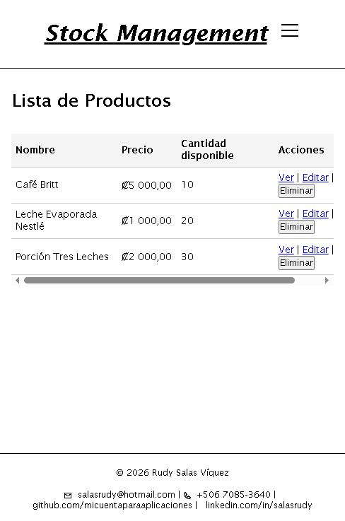
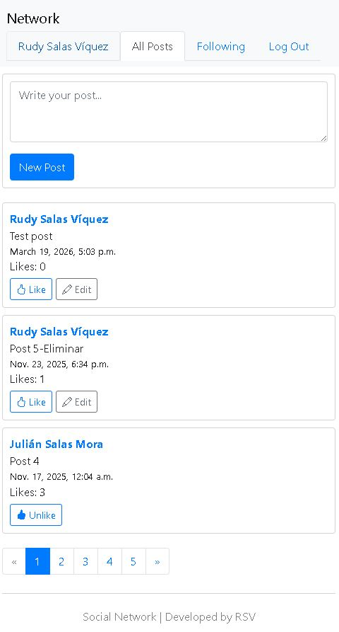
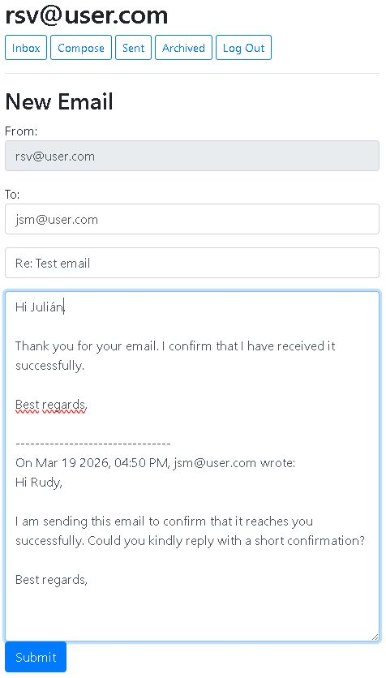
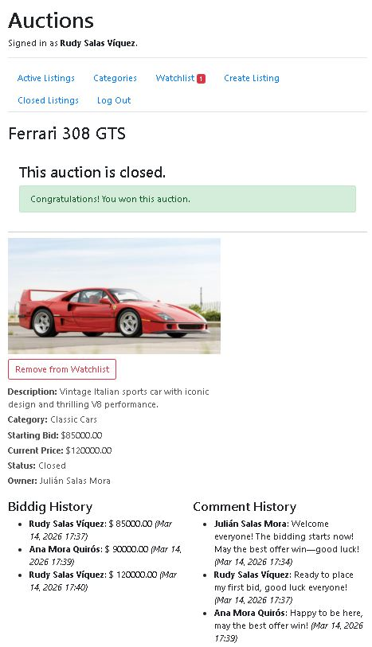

Projects
Distributed Event-Driven System - Multi-Cloud Architecture (Training Project)
Technical Description
Technologies: C# · ASP.NET Core · RESTful APIs · Serverless · Event-Driven Architecture · Azure · AWS · GCP
- Designed and implemented a distributed event-driven architecture deployed across Azure, AWS, and GCP.
- Built RESTful APIs in ASP.NET Core using Azure App Service, AWS Lambda, and Google Cloud Run for multi-cloud service orchestration.
- Implemented asynchronous messaging with Azure Service Bus, Amazon SNS/SQS, and Google Pub/Sub to decouple services and enable scalable, fault-tolerant workflows.
- Developed serverless processing components for event consumption, business logic execution, and data persistence across Azure SQL, Amazon RDS, and Cloud SQL.
How It Works
A distributed multi-cloud system where client requests are handled through REST APIs and transformed into events for asynchronous processing. These events are routed through message queues and processed by serverless components, enabling decoupled communication, scalability, and fault tolerance. The architecture was implemented across Azure, AWS, and GCP, demonstrating portability and adaptability of event-driven systems.

Stock Management System - Full Stack Web Application
Technical Description
Technologies: Node.js · Express.js · MongoDB · Mongoose · JavaScript · HTML · CSS
- Developed a stock management system using Node.js and Express.js with RESTful API architecture.
- Designed MongoDB models and implemented CRUD operations with validation and structured responses.
- Implemented atomic operations to handle concurrent requests and prevent race conditions, ensuring data consistency.
How It Works
A web application that helps small businesses efficiently track inventory, update product details, and prevent stockouts. Users can list products, set prices, monitor available quantities, and perform quick actions like adding, editing, or removing items—all in one place.

Social Network System - Full Stack Web Application
Technical Description
Technologies: Python · Django · JavaScript · SQLite · HTML · CSS
- Engineered a social network application using Django following the MVT architecture.
- Designed relational data models for posts, user relationships, and likes.
- Implemented authentication, asynchronous interactions (follow/unfollow, like/unlike), and paginated feeds.
How It Works
A web application that allows users to connect, share posts, and interact with others in real time. People can create content, like or edit posts, follow other users, and navigate through feeds with pagination—making it easy to build and engage with an online community.

Single-Page Email Client System - Full Stack Web Application
Technical Description
Technologies: Django · JavaScript · SQLite · HTML · CSS
- Developed a single-page email client integrated with a Django backend API.
- Implemented asynchronous communication using Fetch and JSON for email operations.
- Built dynamic mailbox views (Inbox, Sent, Archive) without page reloads.
How It Works
A lightweight web application that simplifies email communication by bringing inbox, compose, sent, and archived views into a single interface. Users can quickly write and reply to messages, confirm delivery, and manage their correspondence efficiently—all while ensuring secure access through authentication.

Online Auction System - Full Stack Web Application
Technical Description
Technologies: Python · Django · JavaScript · SQLite · HTML · CSS
- Engineered an auction system using Django following the MVT architecture.
- Designed relational data models for listings, bids, comments, categories, and user watchlists.
- Implemented authentication, auction listings, bidding with validation, watchlists, and auction closing logic.
How It Works
A web application that enables users to participate in real-time auctions, place bids, and track competition through transparent bidding and comment histories. Buyers can view detailed product listings, follow auctions, and receive confirmation when they win—making it easy to engage in secure and interactive online marketplaces.
Order Management System - Full Stack Mobile Application
Technical Description
Technologies: ASP.NET Core · Entity Framework Core · Flutter · Oracle Database
- Developed a full-stack order management system aligned with real-world operational workflows.
- Designed and implemented RESTful APIs using ASP.NET Core with layered architecture and relational data persistence.
- Built a cross-platform mobile application in Flutter, enabling real-time integration with backend services.
How It Works
A mobile and web solution that helps businesses streamline their daily operations. Users can log in securely, manage sales, track invoices, register customer orders, dispatch deliveries, and monitor inventory in real time. The system integrates multiple workflows—sales, returns, suppliers, clients, and routes—all in one application, making it easier to control and optimize the entire order lifecycle.